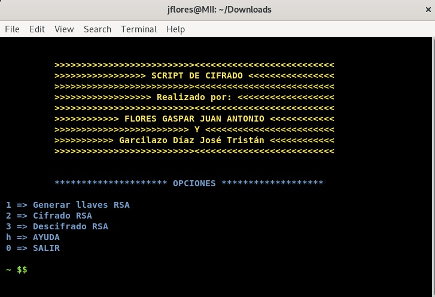

Advanced Encryption Standard (AES), es un esquema de cifrado por bloques adoptado como un estándar de cifrado por el gobierno de los Estados Unidos, creado en Bélgica. El AES fue anunciado por el Instituto Nacional de Estándares y Tecnología (NIST) como FIPS PUB 197 de los Estados Unidos (FIPS 197) el 26 de noviembre de 2001 después de un proceso de estandarización que duró 5 años. Se transformó en un estándar efectivo el 26 de mayo de 2002. Desde 2006, el AES es uno de los algoritmos más populares usados en criptografía simétrica.
es un sistema criptográfico de clave pública desarrollado en 1979, que utiliza factorización de números enteros. Es el primer y más utilizado algoritmo de este tipo y es válido tanto para cifrar como para firmar digitalmente. Como en todo sistema de clave pública, cada usuario posee dos claves de cifrado: una pública y otra privada. Cuando se quiere enviar un mensaje, el emisor busca la clave pública del receptor, cifra su mensaje con esa clave, y una vez que el mensaje cifrado llega al receptor, este se ocupa de descifrarlo usando su clave privada.
Este script se realizo en python con la ayuda de la biblioteca pycryptodome de donde se aprovechan los modulos de AES
Se ejecuta el script con los parametros necesarios
El archivo ha sido cifrado
Para descifrar el archivo se ejecuta el script con los parametros necesarios
El archivo ha sido descifrado
Este script se realizo en python con la ayuda de la biblioteca pycryptodome que es de donde se aprovechan los modulos RSA, AES y hash
Las instrucciones de instalacion para poder utilizarlo están dentro del código del script
Al ejecutar el script se tiene una vista como la siguiente:

Al seleccionar la opción 1 crea las llaves publica y privada
Después de generar las llaves seleccionamos la opción 2 para cifrar algun archivo
Se puede observar el hash y que el archivo ha sido cifrado ya que no es posible leerlo
Para poder descifrar el archivo es necesario seleccionar la opción 3
Se puede observar que el hash es el mismo y el archivo ha sido descifrado